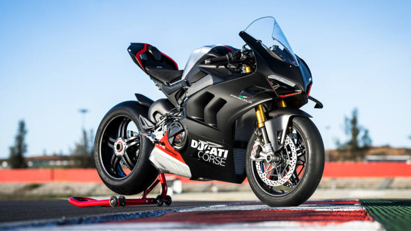
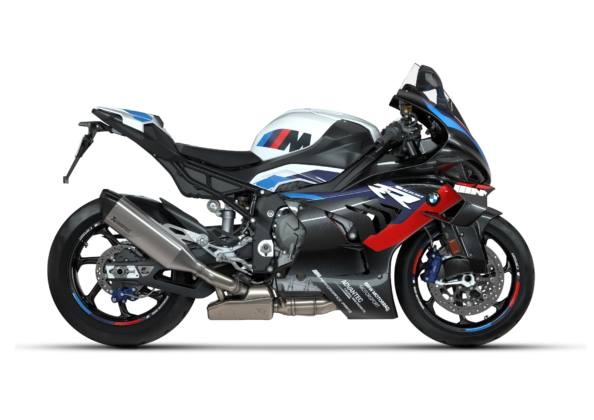
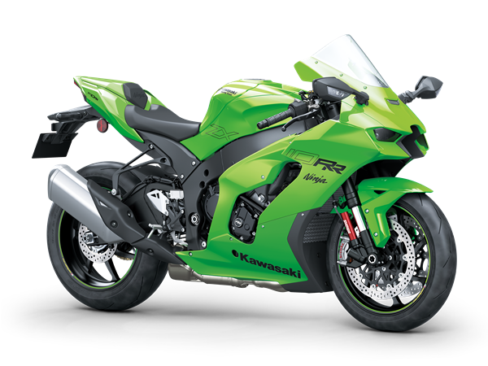
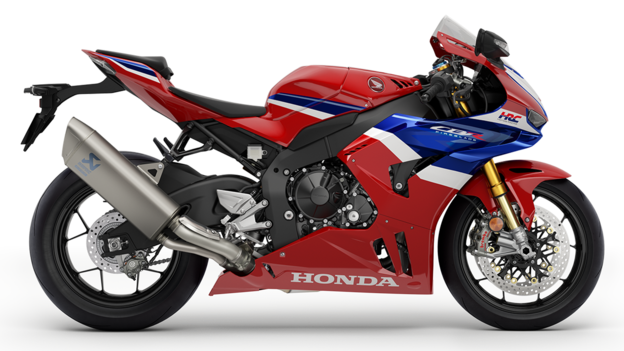
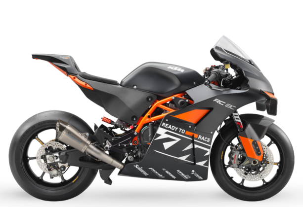
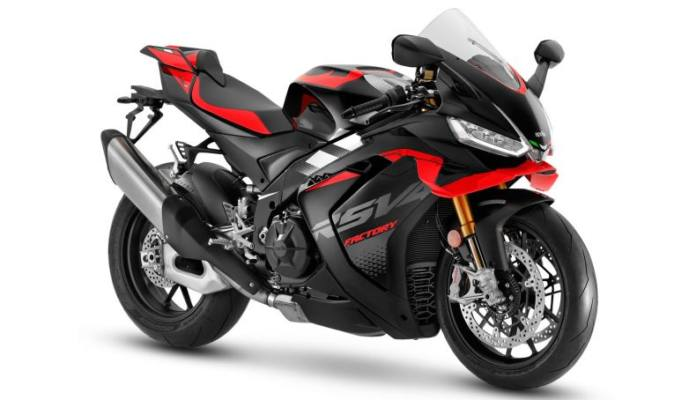
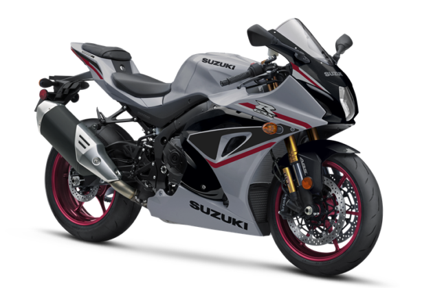

El año 2025 promete emociones fuertes para los amantes de las motos deportivas y la adrenalina en vena. Si eres de los que buscan desafiar tus límites en el circuito, estos pepinos de alto rendimiento ofrecen tecnología punta, potencia inigualable y diseños que te quitan el hipo en cuanto las ves. Desde icónicos modelos de marcas europeas hasta lideresas japonesas. Aquí te presento las mejores opciones para disfrutar al máximo en la pista este año sin importar el dinero que cuesten.
Ducati Panigale V4 SP2
Con una aerodinámica mejorada y componentes de última generación como frenos Brembo Stylema, esta moto está optimizada para el circuito. Su ligereza y suspensión Öhlins electrónica garantizan un manejo ágil y preciso. Además, cuenta con un sistema de cambio rápido bidireccional y un paquete electrónico completo que incluye control de tracción, control «anti-caballito» y modos de conducción ajustables. Todo esto la convierte en una herramienta perfecta para bajar tiempos en la pista.
BMW M 1000 RR

Pensada para exprimir cada curva del circuito, destaca por sus alas aerodinámicas de fibra de carbono que mejoran la estabilidad a altas velocidades. Incorpora un sistema de frenos de alto rendimiento con pinzas Nissin y discos flotantes. Su chasis ha sido optimizado para ofrecer una rigidez ideal, y su pantalla TFT permite personalizar completamente los ajustes electrónicos, incluyendo el control de tracción y el anti-wheelie. Estas características la convierten en una de las máquinas más completas para los entusiastas de los circuitos.
Yamaha YZF-R1M
La R1M cuenta con una electrónica avanzada que incluye control de tracción, control de deslizamiento y öhlins semi-activa que se ajusta automáticamente al estilo de conducción. Su motor crossplane proporciona una entrega de potencia suave y lineal, ideal para salir de las curvas con máxima precisión. Además, incluye telemetría integrada que permite analizar los tiempos por vuelta y optimizar el rendimiento. Esta moto no sólo está diseñada para la velocidad, sino también para ofrecer una experiencia única en el circuito.
Kawasaki Ninja ZX-10RR
Gracias a su sistema de suspensión Showa Balance Free y un chasis diseñado para máxima rigidez, esta moto ofrece una experiencia de pilotaje única. La Ninja ZX-10RR también incorpora una caja de cambios optimizada para el circuito y una configuración electrónica que permite adaptar la potencia al nivel del piloto. Sus alas aerodinámicas integradas y su sistema de escape Akrapovič mejoran tanto el rendimiento como el sonido, convirtiéndola en una opción espectacular para cualquier trazado.
Honda CBR1000RR-R Fireblade SP
Este modelo combina potencia bruta con precisión japonesa. Su freno Brembo Stylema, suspensión Öhlins y un sistema electrónico avanzado garantizan un rendimiento superior en la pista. La Fireblade SP también cuenta con un chasis que ofrece una distribución de peso ideal y una caja de cambios ajustable con quick shifter. Diseñada para pilotos que buscan exprimir cada milésima de segundo, esta moto no deja de sorprender con su comportamiento en las rectas y las curvas.
KTM RC 8C
Aunque su potencia pueda parecer inferior, su ligereza extrema y configuración enfocada exclusivamente al circuito la convierten en una máquina imbatible en curvas. Su motor LC8c es altamente eficiente y responsivo, mientras que su chasis tubular de acero garantiza una rigidez impresionante. Además, cuenta con suspensiones WP totalmente ajustables y neumáticos de competición que maximizan el agarre. Es una moto diseñada para quienes buscan la perfección en cada curva.
Aprilia RSV4 Factory
Con un sistema aerodinámico renovado y un chasis derivado de MotoGP, la RSV4 ofrece una sensación de control absoluto en cada curva. Su paquete electrónico APRC es uno de los más completos del mercado, incluyendo control de lanzamiento, cambio rápido y control de tracción ajustable. La combinación de potencia, manejo y tecnología hacen de esta moto una de las favoritas para los circuitos más exigentes.
Suzuki GSX-R1000R
Destaca por su balance entre potencia y facilidad de manejo. Sus sistemas electrónicos avanzados, como el quick shifter y el launch control, permiten explotar al máximo su rendimiento. Además, su chasis ligero y su sistema de suspensión Showa Balance Free Front Fork garantizan estabilidad y precisión. Una opción confiable y efectiva para mejorar tus tiempos por vuelta.